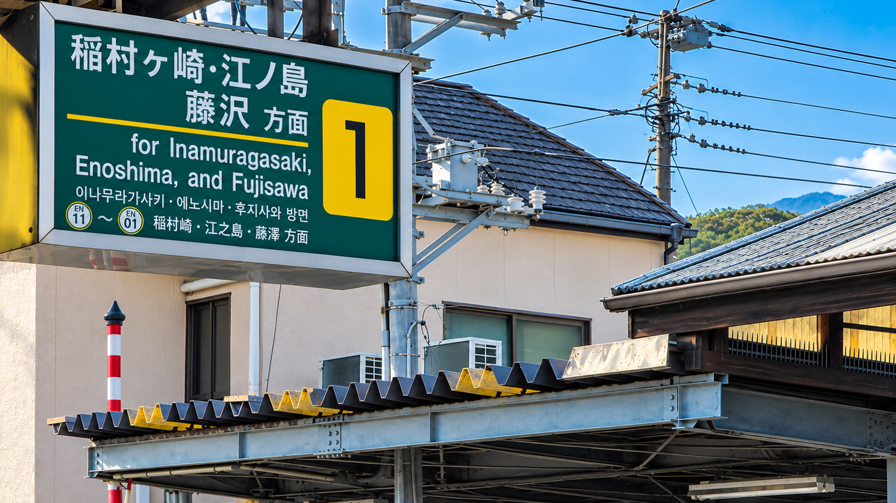
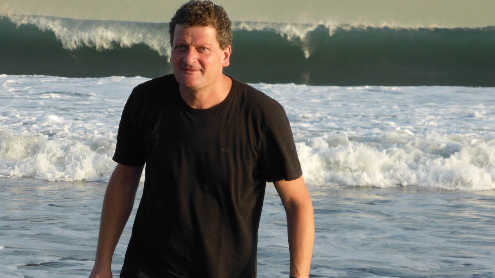
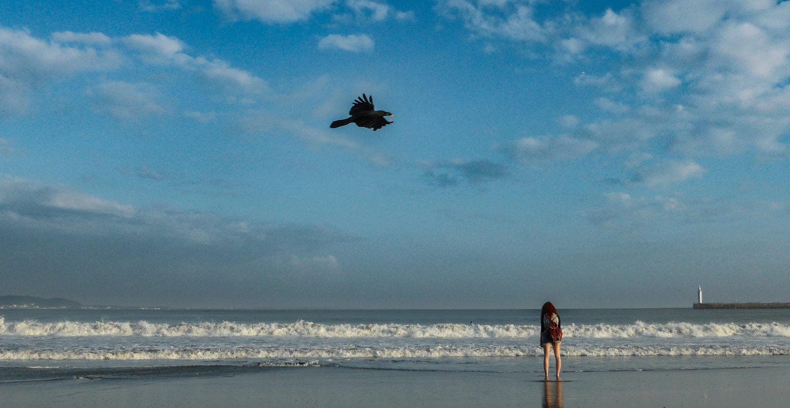
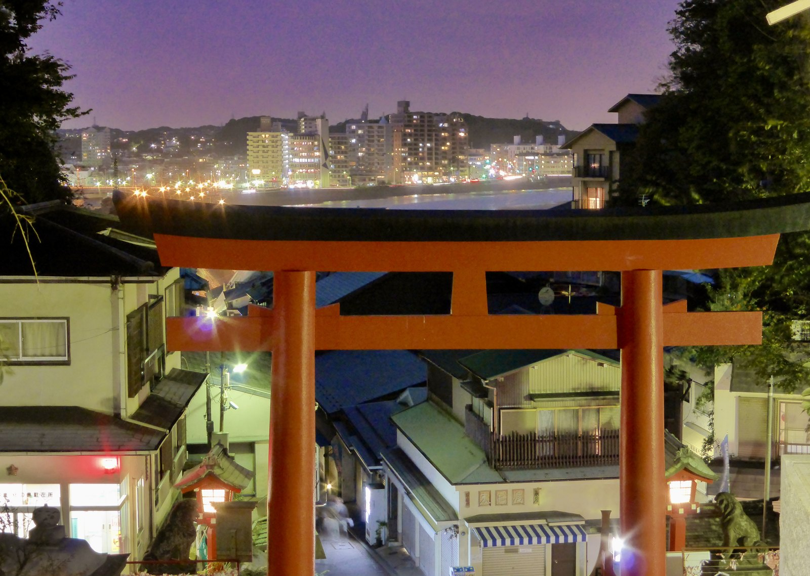
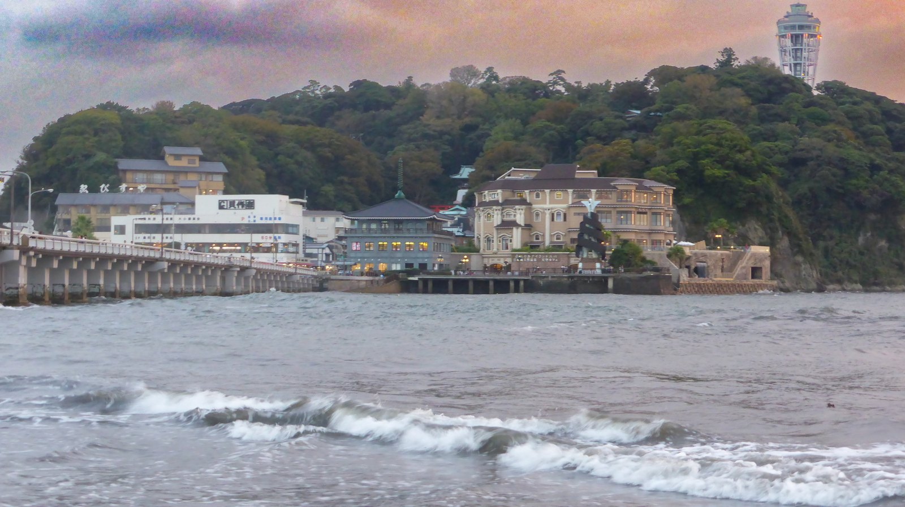
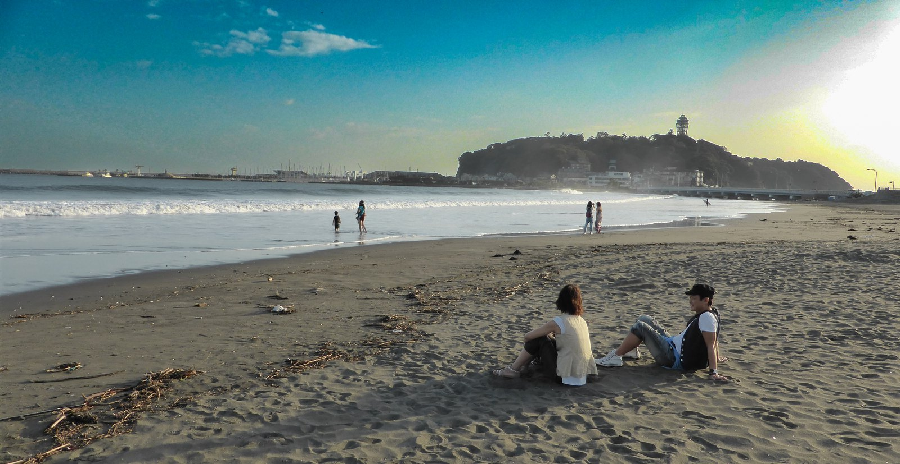
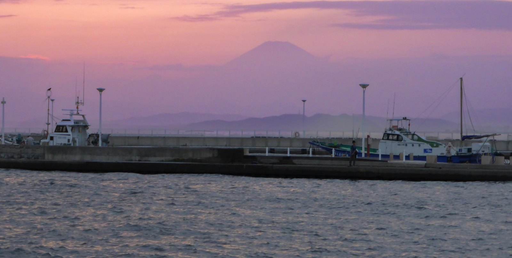
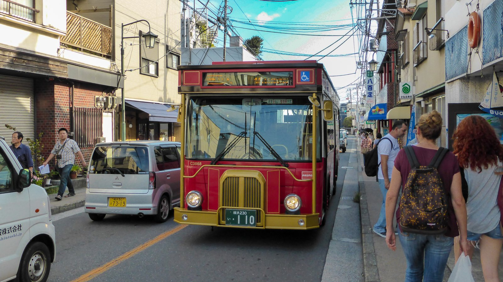
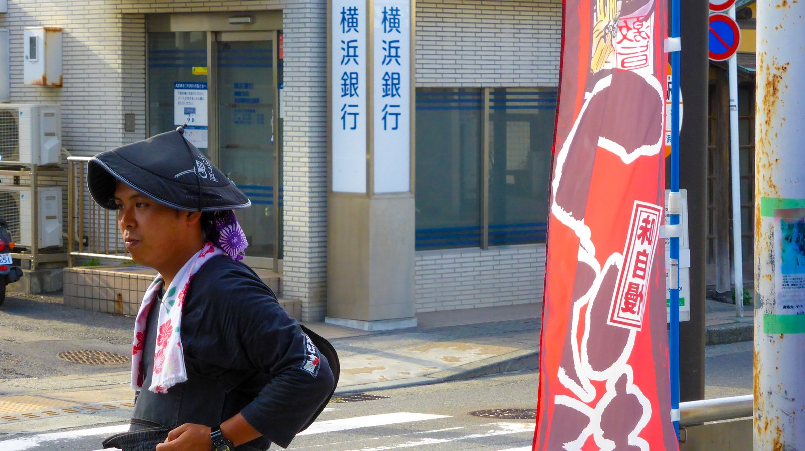
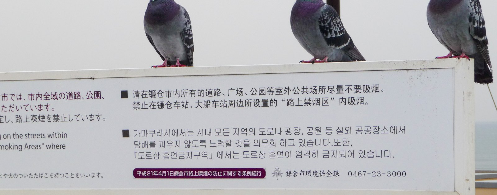

Eine Stunde von Tokio entfernt, in der Präfektur Kanagawa, liegt eine Stadt, die zwei völlig verschiedene Leben gleichzeitig führt. Kamakura war einmal die Hauptstadt Japans, zumindest die des Shogunats, nicht die des Kaisers. Heute ist es vor allem eins: der Ort, an den halb Tokio fährt, sobald die Wellen stimmen. Ich bin mit dem Zug ab Yokohama hergefahren, praktisch jedes einzelne Mal, wenn ich in Tokio war. Zum Surfen selbst hat es nie gereicht. Aber am Strand gesessen und ins Wasser geschaut, das schon, öfter als ich zählen kann.

Die Hauptstadt, die ein Feldherr gründete
1185 gewann der Feldherr Minamoto no Yoritomo den Genpei-Krieg gegen den Taira-Clan. 1192 verlieh ihm der Kaiser offiziell den Titel Shogun, oberster Heerführer. Yoritomo regierte nicht aus der kaiserlichen Hauptstadt Kyoto, sondern von hier, aus Kamakura. Damit begann die erste Militärregierung Japans, das Kamakura-Shogunat, das 148 Jahre lang bestand, bis 1333. Samurai statt Hofadel. Das war, ziemlich genau hier an dieser Küste, der Beginn des japanischen Mittelalters.
Yuigahama: Wo schon der Shogun ins Wasser ging
Der Strand von Yuigahama trägt seinen heutigen Ruf nicht zufällig. Schon Minamoto no Yoritomo vollzog hier rituelle Waschungen im Meer, bei Maehama, wie der Strand damals hieß, bevor er die Schreine von Hakone und Izu besuchte. Bis heute, jedes Jahr im September, waschen sich Priester des Tsurugaoka-Hachimangū-Schreins zum Reitaisai-Fest im selben Wasser. Gesurft im heutigen Sinn hat hier natürlich niemand, im 12. Jahrhundert gab es weder Neoprenanzug noch Longboard. Aber die Verbindung zwischen Kamakura, seinem Shogun und genau diesem Wasser ist keine Erfindung. Sie ist über 800 Jahre alt. Deshalb die Überschrift, mit Fragezeichen.
Heute ist Shonan, die Küste zwischen Kamakura und Ōiso, so etwas wie die Wiege der modernen japanischen Surfkultur, eingeführt in den 1960er-Jahren von US-Soldaten vom nahen Stützpunkt Atsugi. Mehrere Spots allein bei Kamakura, die meisten Reef- oder Beachbreaks, sanft an normalen Tagen, ordentlich Druck bei Taifun-Swell. Von Shibuya aus 45 Minuten mit dem Zug. Tokioter Surfer fahren morgens raus, fangen ein paar Wellen, und sitzen danach pünktlich im Büro. Diesen Rhythmus nennt man hier Shonan-Lifestyle.


Der Buddha, der sein Dach verlor
Im Stadtteil Hase steht der Kamakura Daibutsu, der Große Buddha: Bronze, 13,35 Meter hoch, rund 121 Tonnen schwer. Gegossen 1252, ursprünglich in einer Halle untergebracht und komplett vergoldet. Von dem Gold ist nur noch eine Spur an der rechten Wange übrig. Von der Halle gar nichts mehr. Ein Taifun, dann noch einer, dann 1498 ein Tsunami, der die gesamte Konstruktion wegriss. Seitdem sitzt der Buddha einfach draußen, seit über 500 Jahren, Wind und Wetter und salziger Seeluft ausgesetzt, und schaut dabei gelassener aus als die meisten Touristen, die ihn fotografieren.
Enoshima: Ein Berg der Göttin, mitten im Meer
Enoshima ist keine Insel im Sinne von weit weg, man geht einfach über eine Brücke hinüber. Oben auf dem Hügel: der Enoshima-Schrein, genau genommen drei Schreine, alle der Göttin Benzaiten geweiht, Patronin des Meeres, Patronin der Musik, Patronin des Wohlstands. Der Sage nach stieg sie vom Himmel herab, um einen fünfköpfigen Drachen zu bändigen, der die Küste terrorisierte. Der Drache verliebte sich in sie und schwor ihr im Gegenzug, sein Unwesen zu beenden. Einer der drei bedeutendsten Benzaiten-Schreine Japans, seit weit über tausend Jahren.

Oben im Cocking-Garten liegen die Überreste eines Gewächshauses aus der Meiji-Zeit, einst eines der größten seiner Art in Ostasien, gebaut vom britischen Kaufmann Samuel Cocking. Das große Kantō-Erdbeben von 1923 zerstörte es komplett. Heute schaut man durch eine Glaskonstruktion direkt auf die freigelegten Grundmauern, während gleich daneben der Sea Candle, ein knapp 60 Meter hoher Leuchtturm, den Blick freigibt: bis zur Miura-Halbinsel, und an klaren Tagen bis zum Fuji.


Der Fuji zeigt sich nicht jedes Mal. Er blinzelt eher, taucht kurz zwischen Dunst und Wolken auf und verschwindet wieder, als würde er selbst entscheiden, wer ihn heute sehen darf. An diesem Tag hatte ich Glück.

Näher an Fukushima, als ich dachte, aber nicht so nah, wie ich fürchtete
Was mich an Kamakura überrascht: Fukushima liegt näher, als man in Europa vermutet, aber nicht so nah, wie ich selbst lange dachte. Ich hätte auf hundert Kilometer geschätzt. Tatsächlich sind es knapp 300, Fukushima-Daiichi liegt gut 240 Kilometer nordöstlich von Tokio, Kamakura nochmal ein Stück südlich davon. Verändert hat sich hier seit 2011 trotzdem auffällig wenig. Kein Geigerzähler an der Strandbar, keine Sorge im Wasser. Nur die Entfernung war in meinem Kopf falsch, nicht der Eindruck von der Stadt.
Straßen, Busse, sehr freundliche Menschen
Kamakura selbst ist trotz der großen Geschichte eine ziemlich kleine, ziemlich entspannte Stadt geblieben. Alte Busse kurven durch schmale Straßen, Männer mit traditioneller Kopfbedeckung laufen neben Touristen mit Surfbrettern unterm Arm, niemand findet das ungewöhnlich. Ich bin hier erstaunlich schnell mit Japanern ins Gespräch gekommen, öfter als anderswo im Land. Vielleicht, weil hier weniger gehetzt wird als in Tokio. Vielleicht auch nur, weil eine Kamera in der Hand hier immer wie eine Einladung zum Reden aussieht.


Auf einer Amtstafel mitten in der Stadt steht in aller Ausführlichkeit, dass Rauchen und das Tragen brennender Zigaretten auf Straßen und in Parks der ganzen Stadt untersagt ist. Drei Tauben saßen währenddessen entspannt obendrauf und kümmerten sich um keine einzige Zeile davon. Die Verordnung richtet sich offenbar nur an Menschen.

Fazit
Kamakura und Enoshima, das muss jeder Tokio-Besucher einmal gesehen haben. Nicht wegen einer einzelnen Attraktion. Wegen der Kombination: Ein Shogun, der von hier aus regierte. Ein Buddha, der sein Dach verlor und trotzdem blieb. Eine Göttin, die einen Drachen zähmte. Und eine Küste, an der Angestellte aus Tokio heute genau dort surfen, wo Krieger sich vor 800 Jahren rituell wuschen. Zum Surfen selbst hatte ich nie Zeit. Am Wasser gesessen habe ich trotzdem oft genug.
📍 Kamakura auf Google MapsQuellen & Recherche
Diese Story basiert nicht nur auf eigenen Erinnerungen. Ein paar Fakten habe ich recherchiert und mit folgenden Quellen abgeglichen. Wer will, kann selbst nachlesen.
- Minamoto no Yoritomo, Wikipedia
- Kamakura-Periode, Wikipedia
- Yuigahama, Maehama und das Reitaisai-Fest, Nippon.com
- Shonan, Wiege der modernen japanischen Surfkultur, Jakarta Post
- Kōtoku-in, offizielle Tempelseite
- Großer Buddha von Kamakura, Nippon.com
- Die drei bedeutendsten Benzaiten-Schreine Japans, Wikipedia
- Cocking-Garten, Gewächshausruine, offizielle Seite Enoshima Sea Candle
- Enoshima Sea Candle, Wikipedia
- Kernkraftwerk Fukushima-Daiichi, Wikipedia